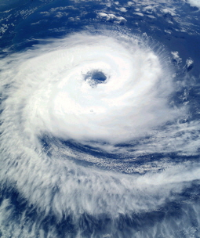

① How they are made
② Holding Atmosphere
③ What Atmospheres do

④ Atmospheric Pressure
The air that you breathe and the clouds you see in the sky are part of the earth’s atmosphere. An atmosphere is like a blanket completely covering a world. This blanket is made up of gases.